1 文献管理
Zotero是在我尝试过Endnotes和Jabref后长期使用的文献管理软件。 功能过于强大，且免费。 以下结合本组文献整理规范，对Zotero一些功能和设置进行说明。 如果你已经安装好Zotero，也请仔细对照设置部分，保证与团队一致。 本章编写时，Zotero稳定版本为6.0版，但7.0已经公测，功能基本完备。 因此本章主要基于7.0进行部署讲解。1
1.1 安装
- 官网Zotero | Home进行下载并完成安装。（Chrome插件后期会自动安装）
- 本章写作时，安装7.0版本仍需要通过beta渠道下载。
- 回到官网进行注册,记住注册信息。
注册非常重要，是保证文献信息永不丢失的重要步骤，请务必进行。
1.2 主程序设置
主程序的设置窗口在编辑 → 设置中。
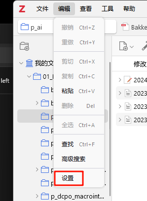
设置中包含不同的选项卡，里面的选项可根据需要和使用习惯自行调整，这里只对重点项目和组内需统一的项目进行说明：
首先，“常规”选项卡下，请勾选“重命名链接的文件”，然后点击“Customize Filename Format…”
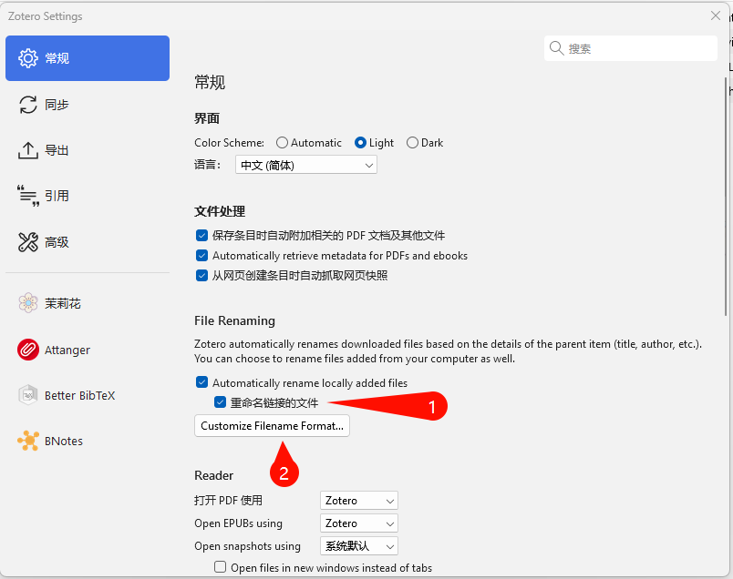
在弹出的“Filename Format”选项框中，将以下代码复制到“Filename Template”部分：
{{ if creators == {{creators max="2"}} }} {{ creators join=""}}{{ else }} {{ creators join = "" max = "1" suffix="EtAl" }} {{ endif }}{{ year suffix="_" }}{{ title truncate="100" }}以下的“Preview”部分显示对输入的文件名进行统一格式重命名后效果。
其次，在“同步”选项卡中要进行几部分的设置：
- 登录注册的Zotero账户。
- 保持勾选“自动同步”，但去掉“同步全文内容”的勾选。
- 如需要使用WebDAV同步文献，在“文件同步”中附件同步方式选择“WebDAV”，并参考 Section 1.4 部分进行设置。
1.3 插件设置
1.3.1 Jasminum 设置
用于处理知网文章及其他中文文章
- 务必通过Github repo 安装最新版插件，否则可能与Zotero 7.0不兼容
- 按照提示，安装PDFtk Server。
- 通过设置进入插件设置界面，进行以下设置：
- 去掉拉去指望元数据后调用Zotfile选项
- 正确设置PDFtk Server
- 如有需要改动设置语言
1.3.2 Attanger
是Zotfile插件在Zotero 7.0上的兼容版本，用于更好地管理文献附件。
- 通过Github repo 安装最新版插件
- 通过设置进入插件设置界面，进行以下设置：
- 设置源路径根目录为系统浏览器下载的默认目录
- 如使用WebDAV，则将附加类型选为“副本”
- 推荐在其他设置中三个选项都勾选上
1.3.3 Better BibTeX
将Zotero与Quarto写作（?sec-quarto) 的重要桥梁，用于生成.bib文档。
- 通过Github repo 安装最新版插件
- 通过设置进入插件设置界面，进行以下设置：
- 将应用格式统一为
authEtAl.capitalize+year - 将“快速复制”设置为“Pandoc引用”
- 将应用格式统一为
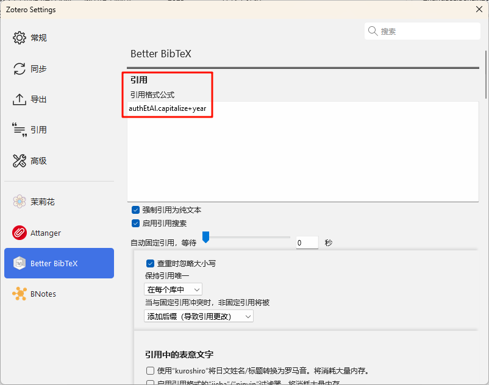 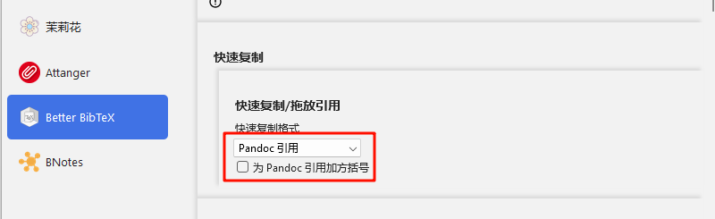
Better BibTeX提供了一种简便的方法，可以将Zotero的书目记录导出为纯.bib文本，并在记录更改后保持文件更新。只需右键单击Zotero中的集合，然后选择“导出集合”。
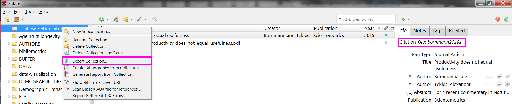
对于需要长期更新的bib文档可采用自动输出方法。 自动输出（Automatic export）设置：

选择持续更新。

输出的.bib文件应放置在我们要编译的.tex, .rmd, 或者.qmd文件的同一目录中。 .bib的名称在YAML标头中指定。 示例如图：

本组通常将Zotero与Quarto联动。 关于这部分可参考官方链接说明。
在某些特殊情况下，可能会要求输出一些特殊内容。 比如，某次申请中要求中文发表都需要添加英文标题。 此时可通过Zotero + Better Bibtex共同实现。 以上述要求为例，首先在Zotero中文发表词条的Extra下添加以下内容：
titleaddon={<The English translation of the article title>}之后在Edit → Settings → Better Bibtex中找到postscrpit项，在其中键入以下JavaScript代码：
if (Translator.BetterBibLaTeX && item.extra) {
const extra = item.extra.split('\n');
for (const line of extra) {
const match = line.match(/^titleaddon={(.*)}$/);
if (match) {
this.add({ name: 'titleaddon', value: match[1] });
}
}
}重启Zotero，这时输出的.bib就会包含英文标题。 但美中不足，Zotero会同时将titleaddon=...内容添加进annotation项加入到词条。 因此在Zotero输出.bib文件后，需要打开文本编辑器，使用正则表达式（^\s*annotation\s*=\s*.*\n?）手动删除这部分多余部分。
之后，在Quarto中确保输出的LaTex文件的header部分加入以下内容：
\usepackage[style=authoryear, backend=biber]{biblatex}
% Define a macro to print the title and titleaddon
\DeclareFieldFormat{titleaddon}{\addcolon\space#1}
\renewbibmacro*{title}{%
\printfield{title}%
\ifboolexpr{ test {\ifentrytype{article}} }
{\setunit{\subtitlepunct}\printfield{titleaddon}}
{\setunit{\subtitlepunct}\printfield{titleaddon}}}之后编译pdf即可获得所需结果。
1.3.4 Better Notes
用于完善Zotero的笔记功能。
name: "[item] collect annotations by color(sort by color) "
content: |-
// @author windingwind
// @link https://github.com/windingwind/zotero-better-notes/discussions/227
${{
async function getAnnotationsByColor(item, colorFilter) {
const annots = item.getAnnotations().filter(colorFilter);
return await Zotero.BetterNotes.api.convert.annotations2html(annots, { noteItem: targetNoteItem });
}
const attachments = Zotero.Items.get(topItem.getAttachments()).filter((i) =>
i.isPDFAttachment() || i.isSnapshotAttachment() || i.isEPUBAttachment()
);
let res = "";
const colors = ["#ffd400", "#ff6666", "#5fb236", "#2ea8e5", "#a28ae5", "#e56eee", "#f19837", "#aaaaaa"];
const colorNames = ["Objeictive", "Theory", "Method", "Finding", "Highlight-Lit", "Highlight-Framing", "Highlight-Wording", "Highlight-Miscellaneous"];
for (let attachment of attachments) {
res += `<h1>${attachment.getFilename()}</h1>`;
for (let i in colors) {
const renderedAnnotations = (
await getAnnotationsByColor(
attachment,
(annot) => annot.annotationColor === colors[i]
)
);
if (renderedAnnotations) {
res += `<h2><p style="background-color:${colors[i]};">${colorNames[i]}</p></h2>\n${renderedAnnotations}`;
}
}
const renderedAnnotations = (
await getAnnotationsByColor(
attachment,
(annot) => !colors.includes(annot.annotationColor)
)
);
if (renderedAnnotations) {
res += `<h2><p>Other Annotations</p></h2>\n${renderedAnnotations}`;
}
}
return res;
}}$1.4 Zotero + 坚果云
- 首先注册坚果云账号，开启坚果云的第三方应用管理。具体步骤如下：
- 登录网页端坚果云账号，点击右上角的账号名称→ 账户信息→ 安全选项→ 第三方应用管理→ 添加应用密码。 应用名称可写zotero，之后会自己生成一个应用密码。
- 打开Zotero：编辑→ 首选项→ 同步→ 设置，输入用户名和密码进行登陆,然后点击
Verify Server- 在文件同步部分建议采用
WebDAV方式，以获得更大的存储空间，同时又为多设备协同提供便利。 国内支持这种方式的最常见服务商是坚果云，对于坚果云如何联结Zotero可参照下图以及其官方帮助文档。
- 在文件同步部分建议采用
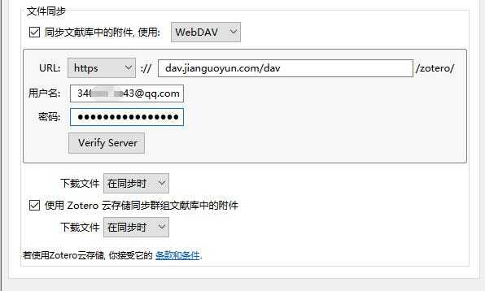
1.5 Zotero + Ipad
- 电脑端设置参见@sec-nutstone；
- Ipad端登陆同一个Zotero账户
- Settings → File syncing → 输入与@sec-nutstone相同的设置
Zotero截止至6.0版本仍然不具备同步软链接功能。 因此如有此需求（建议解锁这个功能；不管会不会真看，先解锁再说），需要在Zotfile 设置中选择General Settings下的“Attach stored copy of file(s)”。
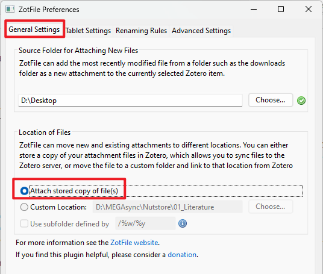
祝贺！你已经完成了设置，请奖励自己一只鸡腿！
1.6 Zotero 6.0 部署
Zotero的7.0版本更新对原有程序做了很多改变。 我们推荐使用7.0，但如果在特殊情况下必须使用6.0，以下为实现上述功能的一些设置
1.6.1 Zotero 6.0（及插件）的安装和注册
官网Zotero | Home进行下载并完成安装。（Chrome插件后期会自动安装）
回到官网进行注册,记住注册信息。
下载插件
- Better BibTeX, 将library导出为bib.格式与Markdown联动。
- ZotFile, 用来管理PDF文件;
- Jasminum, 让Zotero更好适配知网。
下载完成后进入软件-工具-插件-设置（齿轮标识）-Install Add-on From File-安装已经下载的两个插件。

1.6.2 主程序设置
1.6.2.1 常规 General
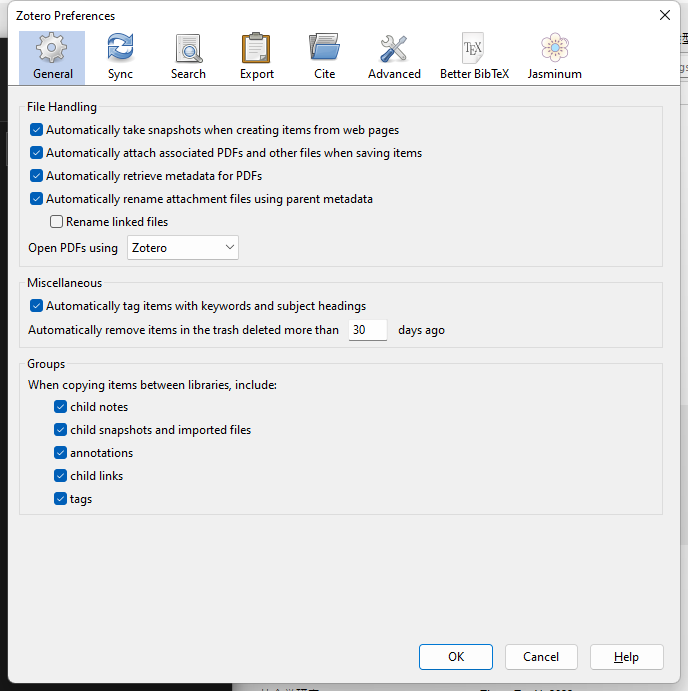
1.6.2.2 同步 Sync

选择自动同步，取消选择“同步全文”。 Zotero只有300MB文件储存空间，之后的空间使用均需按月或按年的维护费用。 如果你家资颇丰，自可购买；否则我们可以采用搭配坚果云的办法，用更节省的方式进行解决，具体参见 Section 1.4。
1.6.2.3 搜索 Search
保持默认即可。
1.6.2.4 导出 Export
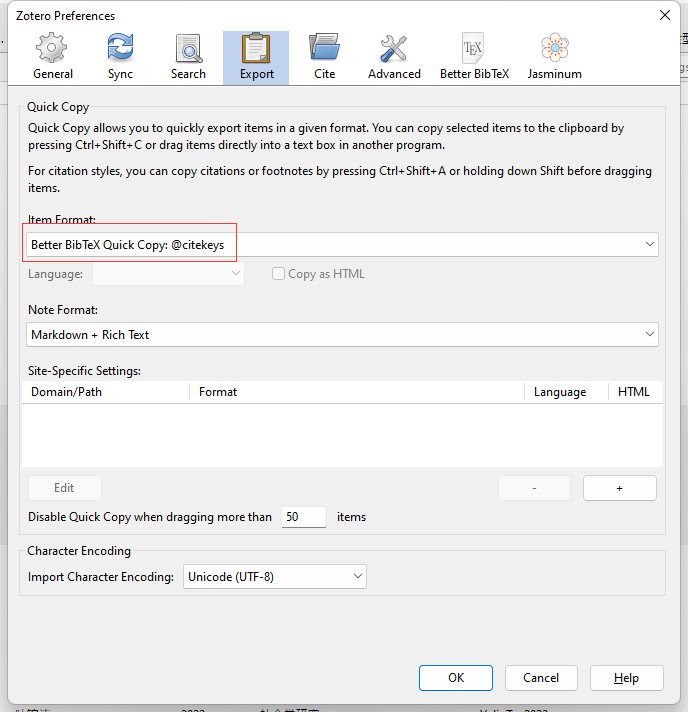
1.6.2.5 引用 Cite
针对参考文献格式的设置。点击[获取更多样式]进入Zotero远程引文格式库。引文格式也可以通过.csl本地文件进行导入，点击[+]。
在”文字处理软件”(Word Processors)中安装MS Word加载项。
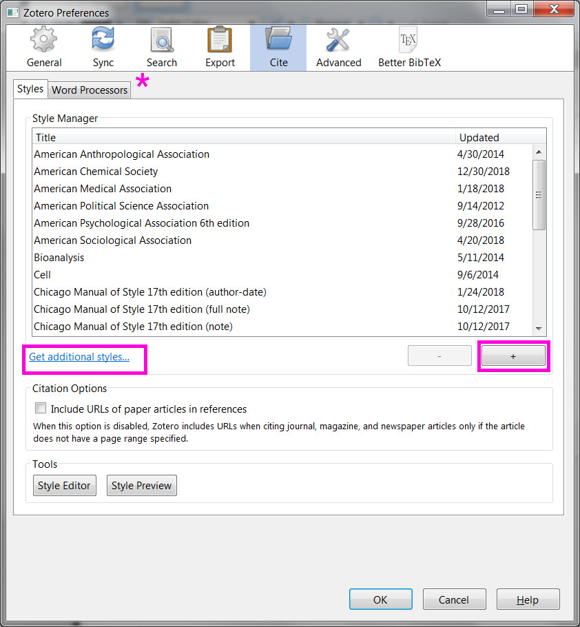
1.6.2.6 高级
文件储存位置：编辑→ 首选项→ 高级→ 文件和文件夹(Files and Folders)
- 设置根目录(Based directory)和数据存储位置。 根目录用于存储文献的pdf文件，设置后将在Zotero中生成软链接。 如决定用此种方式存储文献，可酌情放在较空的硬盘中。 如果之前选择了在
WebDAV方式，这里可以选择不设置。 - 数据储存位置（Data directory location）仅包含Zotero中的引录信息。 如果之前选择了在
WebDAV方式，这个文件夹可以不用同步，保留在本地即可。

1.6.3 插件
1.6.4 ZotFile 设置
工具→ ZotFile preference
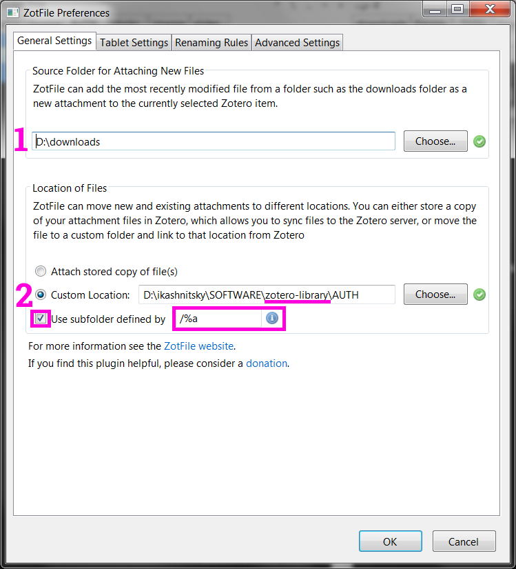
在这里，我们定义了两条路径。 第一个是浏览器下载的文件的默认位置。 第二条路径指向为全文PDF创建的本地目录，我将其命名为zotero-library，并与我们选择的外部云解决方案同步。
下面的“use subfolder defined by…” 表示：根据paper的xxx来给论文分类（以再创建二级文件夹的方式） /%a的意思是按照作者名称分类。 本组通常不勾选。
设置附件的重命名格式, 推荐以下设置{%a}{%y_}{%t}。

1.7 批量修改
Zotero的批量修改功能还在开发中，但能够通过JavaScript进行一些灵活操作。 比如在以下的例子中，就对选定条目的”language”进行了批量替换（zh → zh-CN）:
zoteroPane = Zotero.getActiveZoteroPane();
items = zoteroPane.getSelectedItems();
var rn=0; //计数替换条目个数
var lan="zh-CN"; //替换的语言
for (item of items) {
var la = item.getField("language");
if (la=="zh") //如果为zh则替换
{item.setField("language", lan);
rn+=1;
await item.saveTx();
}
}
return rn+"个条目语言被替换为"+lan+"。"